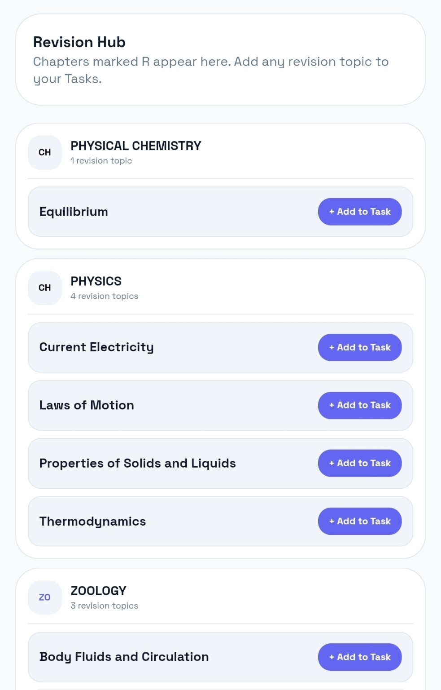
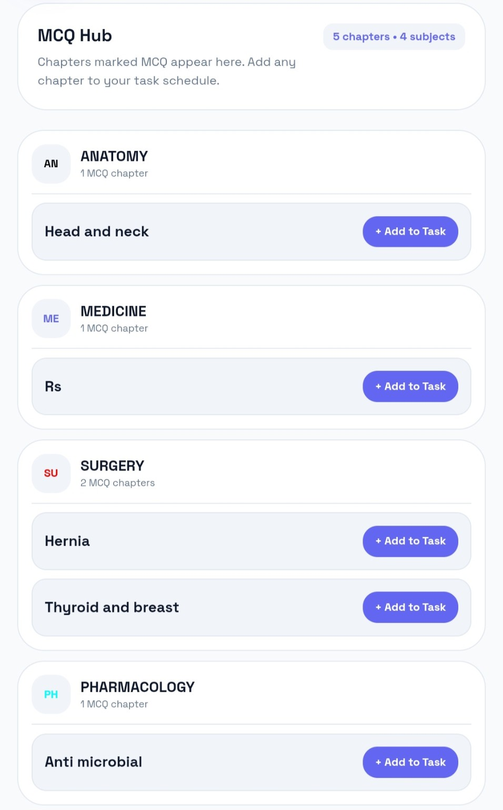
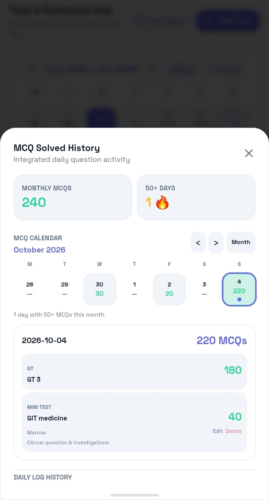
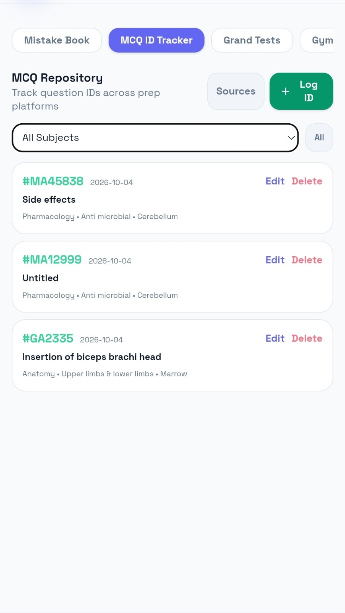
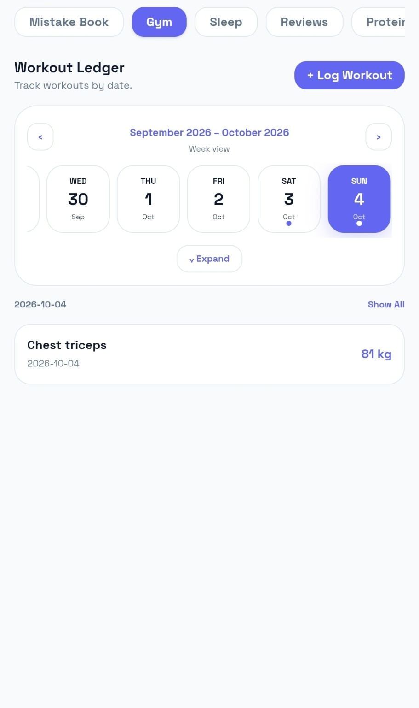
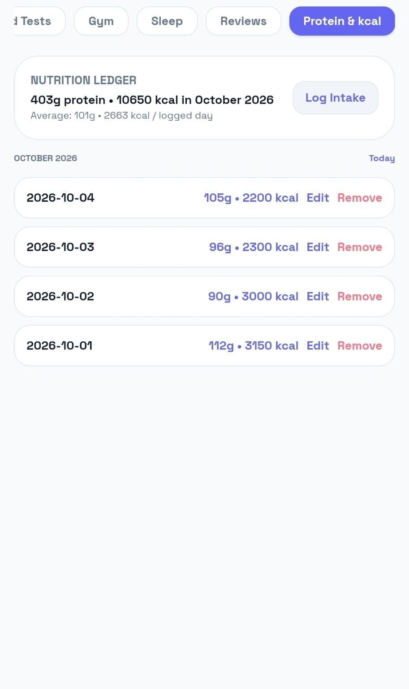
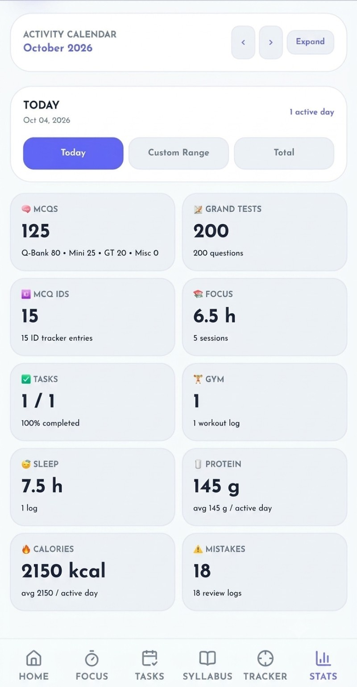

Plan. Focus.
Track. Become.
A unified workspace for students to plan their preparation, focus deeply, practice consistently and understand their progress — without scattering everything across different apps.

Your preparation, in one system.
Trackability connects the actions that make up a real preparation journey — planning, focused work, practice, personal routine and review.
Time blocks, repeats and reminders.
Focus sessions and Pomodoro.
Questions, tests and performance.
Gym, sleep, protein and calories.
History, trends and patterns.
Use the data to adjust.
Turn time into evidence.
The Focus system records what you actually did — Study, Revision or Other — with duration, subject/chapter context, history, goals and Pomodoro cycles.


Make your schedule executable.
Tasks aren't just a checklist. Give them a date, time span, subject, chapter, repeat pattern and reminder — then move them when the day changes.
Syllabus → Revision → MCQs.
The academic side is connected: build your syllabus, surface revision topics, practice chapters and move work into Tasks.

Syllabus
Organise subjects and chapters and see completion at a glance.

Revision Hub
Collect topics marked for revision and send them directly into your plan.
MCQs are more than a number.
Track your solved volume, remember specific questions, log tests and analyse performance without losing the context of where the question came from.

MCQ Hub
Organise question practice by subject and chapter.

MCQ History
See daily solved activity and your accumulated practice.

MCQ Repository
Keep specific question IDs and learning notes for later.
Record the test. Understand the result.
Store the test name, platform, questions, correct, wrong and left. Track scores over time and use the performance history to identify direction, not just a single result.

Your preparation has a body too.
Gym, sleep, protein and calories sit alongside academic progress because consistency is bigger than study hours alone.
See all tracking features →
Gym

Nutrition

Statistics
One preparation. One place. A clearer next step.
Open the working Trackability app and start building your own system.